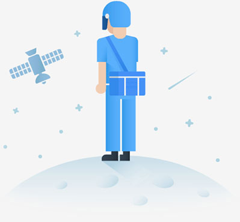

<!-- <ion-header>
  <div class="yemei">
      <ul name="baise">
          <li class="fanhui" [routerLink]="['/index']">< 返回</li>
          <li class="names">加载异常</li>
          <li class="right_title"></li>
      </ul>
    </div>
</ion-header> -->

<ion-content>
  <div class="no_page_bg">
    <ul class="imgs"></ul>
    <ul class="titles">网络异常</ul>
    <ul class="anniu" (click) = "relode()">重新加载</ul>
  </div>
</ion-content>
